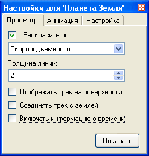
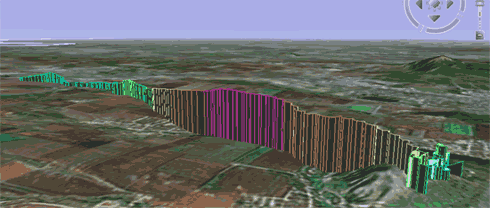
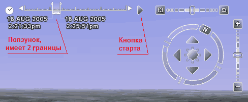
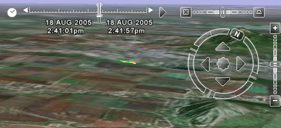
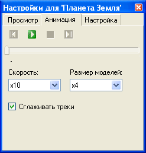
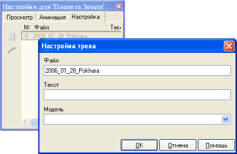
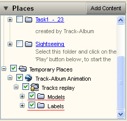

Справка / Работа с треками / Просмотр ЗD трека в 'Планета Земля'
Варианты выбора трека для просмотра:
- На вкладке 'GPS треки' выберите нужный трек (или несколько треков) из списка и нажмите кнопку 'Показать в 'Планета Земля'' на тулбаре.
- На вкладке 'Журнал записей' выберите запись у которой есть трек и нажмите кнопку 'Показать в 'Планета Земля'' на тулбаре.
Появится окно настроек:

Оно по умолчанию ставится в левый нижний угол и находится всегда поверх других окон, чтобы быть всегда доступным при анимации и не загораживать карту 'Планеты Земля'.
Положение и размеры окна размеры запоминаются.
Выберите опции:
Тип раскраски трека
Также как и на карте в программе, трек может быть раскрашен:- По скорости движения отностительно земли
- По абсолютной высоте
- По скороподъемности (скорости изменения высоты)
Толщина линии трека
По умолчанию толщина - 2 пикселя.
У треков с большим количеством точек на удалении от трека может возникнуть эффект пропадания картинки трека, попробуйте поставить толщину линии 1 в таких случаях.
Отображать трек на поверхности
Если опция установлена, то высота в треке игнорируется и линия трека рисуется прямо по поверхности земли, это полезно для просмотра проекции трека.
У наземных треков высота точек может быть ниже высоты поверхности земли, которую показывает программа, в таком случае наземный трек может быть не виден, включите эту опцию.
По умолчанию установлена для наземных проектов.
Соединять трек с землей
Если отмечена, то будут нарисованы линии, соединяющие точки трека с землей по вертикали:

Включать информацию о времени (Анимация GPS трека без моделей)
Отметьте галочку, если хотите анимировать трек во времени!
Если в трек включена временная информация, то 'Планета Земля' будет показывать панель анимации рядом с кнопками навигации:

Если этой панели нет, то значит у вас устаревшая версия 'Планета Земля', обновите до последней версии.
Панель управления имеет ползунок, который мышью можно раздвигать, устанавливая ширину временной рамки, и передвигать рамку во времени. Только точки, попадающие во временную рамку будут показываться.
После загрузки трека в 'Планета Земля' рекомендуется установить ширину рамки до уровня когда начнут показываться не менее 4-5 точек трека, иначе изображения может быть не видно.
Дла анимации нажмите 'Кнопку старт'.

Анимация GPS треков с 3D моделями
Вот как она выглядит:
Переключитесь на закладку 'Анимация',
нажмите кнопку проигрывания.
В процессе анимации вы можете менять скорость проигрывания и размер моделей, галку 'Сглаживать треки' можно отметить только при остановленной анимации:

На закладке 'Настройка' можно
настроить 3D модель и текст, который показывается рядом с моделью, для каждого трека:

Во время проигрывания можно отключить/включать показ текста и моделей, отмечая соответствующие галки в панели 'Планета Земля':
